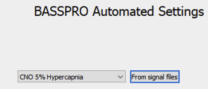

This option can make things much easier, however, the numerical settings for the each of the variables will
need to be manually adjusted as these are not automatically updated based on your comments. However, we provide
an easy-to-use excel sheet with suggested values for almost any experimental design so you can easily fill in
your automated settings.
Click AutomatedSettings button (6) to open the automated settings subGUI.
Click Open to navigate a file dialog to select an existing automated settings file. The tables in each tab will populate with the appropriate settings based on your selection.
Select a default setting from the drop-down menu that matches the experimental conditions represented by the selected signal files (the .txt files).
Make edits if needed.
Save your settings.
Click Ok to save your settings in local memory – the actual csv files detailing the settings won’t be created until BASSPRO is launched.
Click SaveAs to open a file dialog to save your settings in a particular location for access later.
Either option of saving will result in a copy of these settings saved in the BASSPRO output folder for this run once launched.
Click the AutomatedSettings button (6) to open the automated BASSPRO settings subGUI.
Click the FromSignalFiles button (Figure 11).

Figure 11 Button to use for generating custom auto settings from signal files.¶
This process can take anywhere from thirty seconds to several minutes depending on how many signal files you have selected as the process must interrogate each file at every time for new comments.
Review the settings for each of the timestamps extracted.
Timestamps can be renamed in the header column.
If a timestamp was considered unique because of a typo, you can correct the header for that timestamp to match what it was supposed to be.
This will allow for typos to be grouped with the intended/ correct condition rather than being a separate condition with a single entry.
Be sure that the settings for gas concentrations match what you need for each condition. These may not be automatically filled correctly.
For example, CO2 exposure periods need different requirements for gas concentrations than room air periods. Use the provided table to
adjust these settings as needed. You can download this table below.